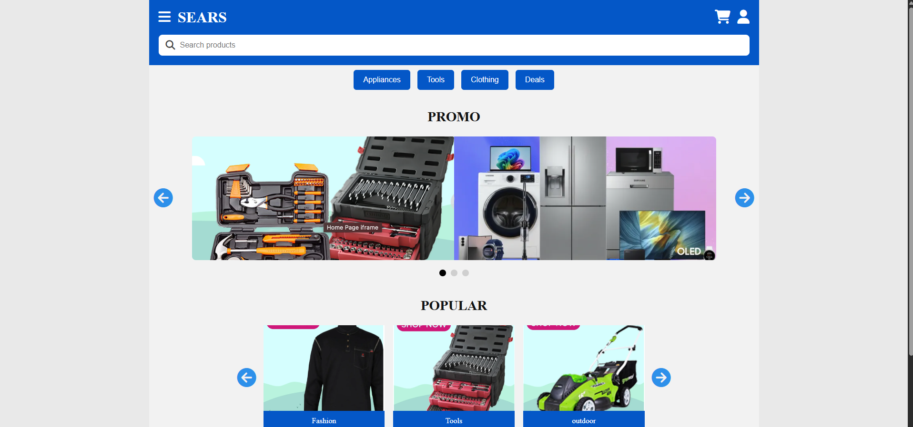
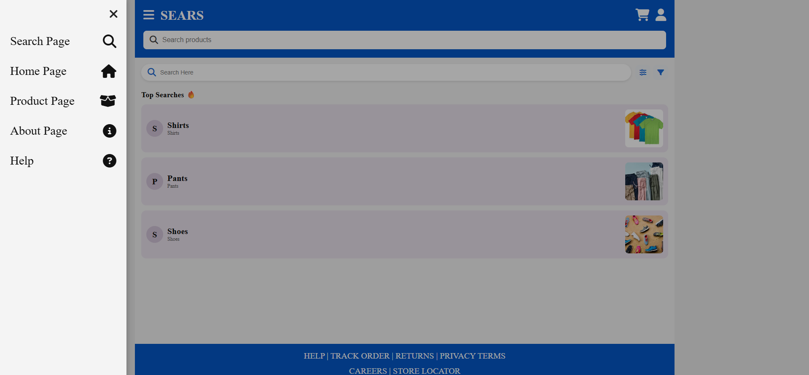
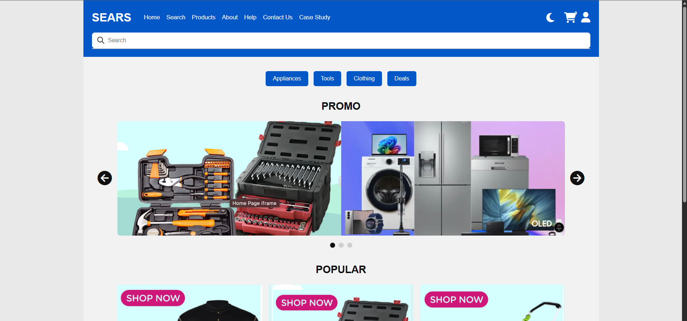
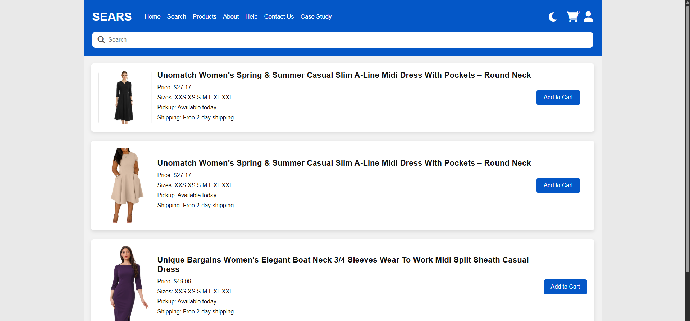

Portfolio Case Study
Sears Website Redesign Case Study
This case study documents the redesign process for a Sears-inspired retail website. The goal was to improve the shopping experience by making navigation clearer, pages more consistent, and the overall interface easier to use.
Problem
The original experience needed improvement because users could have difficulty moving through the shopping flow. Important areas such as product browsing, search, cart access, help, and account pages needed to feel easier to find and more connected as one complete website.
My Role
This was a team project, but my main focus was front-end structure, navigation, page layout, and usability. I worked on making the site easier to move through across pages such as Home, Search, Product, Cart, About, Help, Sign In, and Sign Up.
Before: Original Layout Issues
Before redesigning, I reviewed the page structure and looked for areas that could confuse users. The main issues were inconsistent navigation in the desktop version / mobile version of the site. The site also had unclear page flow based on the user's current location especially when they were on the search page. The original layout also had a lot of unnecessary vertical spacing and a layout that needed stronger visual hierarchy.


Process
I started by reviewing how users would move through the site. From there, I focused on improving navigation, spacing, visual hierarchy, page consistency, and responsive layout. The goal was to make the website feel like one connected retail experience instead of separate disconnected pages.
- Improved navigation consistency across pages
- Organized product and category areas more clearly
- Adjusted spacing so the layout felt less crowded
- Checked mobile and desktop usability
Design Decisions
I made design decisions based on usability and clarity. The header and navigation were kept consistent so users could always understand where to go next. Product and category areas were separated visually so users could scan the page faster. Buttons, icons, and links were styled consistently to make the interface feel more complete.
Testing and Feedback
I tested the redesign by opening the site in a browser, clicking through each page, checking links, and reviewing how the layout behaved on different screen sizes. Feedback showed that navigation, spacing, and mobile usability needed the most attention. Based on that feedback, I adjusted links, improved layout consistency, and made sure the site worked as a complete multi-page experience.
After: Final Redesign
The final design provides a cleaner and more organized shopping experience. Users can now browse pages, search for products, access the cart, and find help pages more easily and efficiently as shown in the after screenshots.


Reflection
The experience of redesigning a website was a great learning experience. I learned how important it is to have clear and consistent designs that users can easily understand. I also learned how important it is to have a responsive layout that works well on different screen sizes. I also learned how important it is to test the site on different screen sizes and devices to ensure it works well on all devices. I also learned that each devices should be slightly different than the other, this ensures that each device has its own functionality and navigable layout. Last but not least, I learned how important it is to work in a group and have clear communication between team members. If I were to continue improving this project, I would focus more on user testing and refining mobile responsiveness to further enhance usability.
Final Product
The final website is a multi-page retail redesign with pages for products, search, cart, deals, help, account access, and category browsing. Compared to the original concept, the final version provides a clearer structure, stronger navigation, and a more complete user experience.
View Live Website